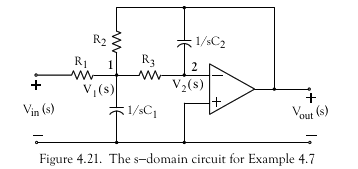

Lab 3: Laplace Transforms and Transfer Functions for Circuit Analysis
Preamble
Associated Class Notes
This lab supports the materials covered in Chapter 3.3 and Chapter 3.4 of the course notes. You may wish to refer to the Worksheets worksheet 6 and worksheet 7 for additional examples to try.
Other formats
This document is available in HTML format for online viewing PDF for printing.
Acknowledgements
These examples have been adapted from Chapter 4 of Stephen Karris, Signals and Systems : With MATLAB Computing and Simulink Modeling (5th Edition).
Tutorial: Defining Transfer Functions in Matlab (not assessed)
The linked m-File is a short tutorial introduction to the definition of transfer functions in Matlab. It introduces the Linear Time Invariant (LTI) block and shows how it can be used in analysis. Download, publish and read the file and use it as a reference for later labs.
Linked m-file: tf_matlab.m.
Lab Exercise 4
Download the linked script file for the Solution for Example 3 from Week 3. This presents part of the solution to Textbook Example 4.3.
Linked script file solution3.m
Starting from the simplified circuit (Fig. 4.9 from Karris, 2012: p4-5):

-
Define equation 4.5 in MATLAB:
eq45 = (Vout - 1 - 3/s)/(1/s + 2 + s/2) + Vout/1 + Vout/(s/2) == 0Now use
Vout = solve(eq45,Vout)function to confirm Equation 4.6 - Use
rootsto find the factors of the denominator and expand the terms with complex roots to find the quadratic factor. - Use the inverse Laplace Transform on the rational polynomial with real and quadratic factors to determine the symbolic expression
voutas a function of time. - Verify that the response is
- Use
ezplotto plot this result. - Compare your answer with the numerical solution given by the script.
Save your solution as a file with the name ex4.
Lab Exercise 5: Problem Solving in Matlab
Choose one of the Problems Q1-Q3 from Section 4.7 of Karris 2012 (page 4-21) and use MATLAB to adapt the methods used to solve the problem in Lab Exercise 4 to determine the required solution.
Save your chosen solution as a file with the name ex5.
Lab Exercise 6: Complex Impedance and Admittance
The linked file solves Example 4.5 from Karris 2012 (Example 5 in the notes). The solution concerns the calculation of the Complex Impedance and Admittance of the Circuit shown in Figure 4.16.
Linked file: solution5.m.

Download the file into MATLAB and use it to verify the equation for the circuit impedance $Z(s)$ given in the notes and the text. Extend it to calculate the admittance $Y(s)$.
Use the same technique to solve Q4 from Section 4.7 (Exercises) of Karris (p. 4-21).
Save your solution to a file with the name ex6.
Mini Project 2: Transfer Functions
Download the linked Matlab script which computes the solution to Example 4.7 from Karris (2007) (Example 7 from the notes). This script computes the transfer function of the Op-Amp circuit shown below:

Linked script file: solution7.m
In the original example:
R1 = 20 kOhm
R2 = 40 kOhm
R3 = 50 kOhm
C1 = 25 nF
C2 = 10 nF
Use your student number to give a different set of component values whiles maintaining the relative sizes.
For example if your number was 876543 you might use:
R1 = 80 kOhm
R2 = 70 kOhm
R3 = 60 kOhm
C1 = 54 nF
C2 = 30 nF
If your student number contains 0s, you should substitute a digit if your choice.
You may find doc or help and the symbolic toolbox function sym2poly useful.
To Do: save a copy of solution7.m file as proj3. Adapt the script to repeat the computation
using component values based on your student number. Then:
- compute and plot the phase response of Gs - see function
angle - make a transfer function LTI object
Gs2 = tf(numG,denG) - Compare frequency response with result of
bode(Gs2) - Plot the pole-zero map of
Gs2using thepzmapfunction. - Plot the step response of
Gs2using thestepfunction. - Compute and plot the response of
Gs2to the sinusoid using thelsimfunction. - Repeat the simulation of the sinsoidal response in Simulink - save model as
proj2.slx.
Save your solution as proj2.
What to hand in
You should attach your modified version of the file proj2 along with the Simulink model plus any additional scripts that you wish to claim for to the Lab 3 submission page in OneNote. Complete the claim form and hand-in your assignment through Teams.
You will find it easiest to audit your completion of these exercises by opening the provided *.m files as Live Script (.mlx) files and saving them in this format.
Claim
Up to 3 marks can be claimed for the mini project and up to 2 marks more depending on how much of Exercises 5-6 you have completed.
See Assessment and Feedback: Labwork Assessment for a detailed marking scheme.
The deadline for claims and submission is Midnight, 8th March.